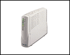
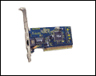
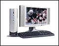
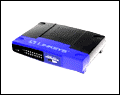

Cable Modem Devices
- Cable Modem
- A special type of modem that connects to a local cable TV line to provide a continuous connection to the Internet. A cable modem can achieve about 4.0 Mbps. Cable modems attach directly to a 10Base-T Ethernet card inside your computer or through a router.
- Network Interface Card (NIC)
- A physical circuit card or PCMCIA device to connect a computer or other device to a network -- to a cable modem or an intermediary router.
- Router
- A device that determines the next network point to which a data packet should be forwarded enroute toward its destination. Routers create or maintain a table of the available routes and use this information to determine the best route for a given data packet.